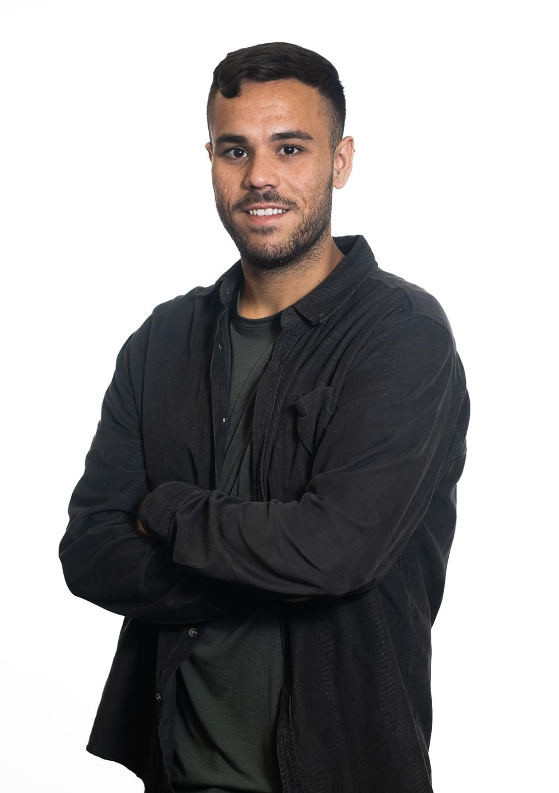

Lior Kirshner

Summary
Junior Software Engineer with a B.Sc. in Mathematics and Computer Science from Ariel University.
with hands-on experience in algorithm design and robotic computer vision. Eager to apply my technical knowledge and problem-solving abilities in a dynamic work environment.
SKIlLS
- Java
- PYTHON
- MATLAB
- C#
- ALGORITHMS
- DATA STRUCTURES
- GRAPH THEORY
Education
B.Sc. in Mathematics and Computer Science
Ariel University - (2021-2024)
personal projects
"MASA" - Share-Ride application
Co-founded a startup in the Ariel University Accelerator program, focusing on Entrepreneurship & Innovation. Led the development of a ride-sharing application, applying graph theory. Utilized Python to develop core features, and collaborated with a team of 3 members to ensure project success.
Work Experience
Mathematics Instructor
"Educating For Excellence"(2023)
Tutoring and teaching school students
MILITARY SERVICE
Prisoner guide, Military Police(2015-2018)
Commander, sergeant at "6 Prison"
Reserve duty (2024-2025)
Warden soldier - High security prison